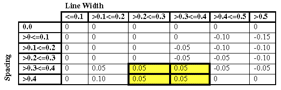

You define the biasing for edges based on geometric relationships defined by SPACE or SPACELAYER statements and their arguments. The specifications set up table-driven OPC corrections. To ensure proper correction, each statement must be specified with a unique constraint.
Table 1 shows a table defining biasing applied based on line width and spacing ranges.
Since each cell in an edge bias table represents a space, width, and associated movement, you create one rule for each cell in the table. The syntax for OPCBIAS consists of keyword-constraint pairs:
SPACE <range> WIDTH <range> MOVE <distance>The constraints for SPACE and WIDTH are ranges, not discrete values. In many cases the range limits are implicit:
SPACE <= 0.150 WIDTH <= 0.150 MOVE 0OPCBIAS default behavior pushes output results down the hierarchy at process completion. This often improves the performance of subsequent SVRF operations. To disable this behavior, set the environment variable OPCBIAS_DISABLE_AUTOPUSH_V1 to 1 in the shell you run OPCBIAS from.
Biasing exactly those portions of an edge that meet the SPACE constraint can result in spacing violations where an edge moves closer to an adjacent polygon.
Use the Opposite Extended metric with SPACE to define an offset relative to change in the proximity environment. When the OPCBIAS operation breaks an edge into two or more edges, each meeting different spacing conditions, this constraint causes the breakpoint to be offset from the point at which the spacing changes. Because of the closer-edge-wins principle, the offset is added to the edge that meets the smallest spacing constraint. The following code sample and figure illustrate this usage.
SPACE <= 0.25 OPPOSITE EXTENDED 0.2 WIDTH <= 0.15 MOVE 0
SPACE > 0.25 OPPOSITE EXTENDED 0.2 WIDTH <= 0.15 MOVE 0.1Biasing exactly those portions of an edge that meet the WIDTH constraint can result in polygons with irregular shapes.
Use the Opposite Extended metric with WIDTH to define an offset relative to change in width. When the OPCBIAS operation breaks an edge into two or more edges, each meeting different width conditions, this constraint causes the breakpoint to be offset from the point at which the width changes. Because of the closer-edge-wins principle, the offset is added to the edge that meets the narrower width constraint.
SPACE > 0.15 WIDTH <= 0.4 OPPOSITE EXTENDED 0.3 MOVE 0.15
SPACE > 0.15 WIDTH > 0.4 OPPOSITE EXTENDED 0.3 MOVE 0Use the Opposite Extended metric when you have an L-shaped polygon and want to ensure that biasing extends to the corner. In this situation, you must set the offset” equal to the maximum line width that could be encountered.
SPACE > 0.15 WIDTH <= 0.4 OPPOSITE EXTENDED 0.5 MOVE 0.15
SPACE > 0.15 WIDTH > 0.4 OPPOSITE EXTENDED 0.5 MOVE 0The OPCBIAS operation provides two methods for controlling the lengths of edges after biasing:
Within rules, you place constraints on the lengths of edges subject to biasing on a rule by rule basis using LENGTH1. Only those edges that satisfy this condition are corrected.
For example, in the case of gates, you use this option to ensure that false edges on the boundary of gate and field POLY are not subject to OPC biasing. To do this, use a constraint that is greater than the channel length (channel length is equivalent to the gate width). When LENGTH1 is specified, this constraint is applied before edges are classified using the WIDTH and SPACE constraints.
For the entire operation, you can define the minimum acceptable length for an edge after biasing (including edges with a bias of zero) using CLOSEREDGE. If needed, you can define two separate minbiaslength values, one for angled edges and one for orthogonal edges.
MINBIASLENGTH applies to all rules processed by the operation whereas the LENGTH1 constraint applies only to the rule for which it is supplied. The OPCBIAS operation enforces compliance with MINBIASLENGTH after it fragments the edges but before it applies the biases.
The OPCBIAS operation uses the SPACE, WIDTH, WIDTH2, LENGTH1, and LENGTH2 conditions to calculate the biasing to apply to each edge. To ensure proper correction, the rules must be mutually exclusive; every rule must differ from all other rules in at least one constraint.
In addition, SPACE, WIDTH, WIDTH2, LENGTH1, and LENGTH2 conditions must be written in terms of a consistent partitioning of spaces, widths, and lengths.
SPACE constraints partition external physical space relative to an edge (the distance between objects).
WIDTH constraints organize edges relative to the width of the polygon directly inside an edge.
WIDTH2 constraints organize edges relative to the width of the polygon directly inside opposing edges.
LENGTH1 constraints organize edges relative to length.
LENGTH2 constraints organize opposing edges relative to length.
Within any set of rules, the partitioning must be consistent. To understand this concept, consider Table 2. The table itself is valid for edges of a specific length. The rows partition external physical space. The columns partition internal space. Cell values in the table represent the biasing to apply to any object that meets the constraints for that row and that column. All rules written to represent this table define treatment based on the same partitioning of space.
For a literal translation of the rules table into OPCBIAS rules, you would write one rule for each cell in the table. However, the OPCBIAS operation enables writing single rules with constraints spanning multiple partitions, which is analogous to merging adjacent cells in a rules table. For example, in Table 3, the four highlighted cells contain the same bias value. The single rule shown below represents all four cells:
SPACE >0.3 WIDTH>0.2<=0.4 MOVE = 0.05 |
The OPCBIAS operation does not allow you to split a partition one way for one rule and another way for another rule. For example, in the following two rules, the width partitions are split differently and cannot be used within the same OPCBIAS operation.
SPACE > 0 <= 0.1 OPPOSITE EXTENDED 0.1 WIDTH > 0.3 < 0.4 MOVE 0
SPACE > 0.1 <= 0.2 OPPOSITE EXTENDED 0 WIDTH > 0.3 <= 0.4 MOVE -0.05Because the metric you use with either the SPACE or the WIDTH constraint plays a part in the partitioning, you must also make sure that the metric you use is consistent for the entire partition. For example, if you use one extension value for a particular WIDTH or SPACE constraint, you must use the same extension value for all other occurrences of that constraint. The following two rules violate this rule and cannot be used within the same OPCBIAS operation:
SPACE > 0 <= 0.1 WIDTH > 0.3 <= 0.4 OPPOSITE EXTENDED 0.1 MOVE 0
SPACE > 0.1 <= 0.2 WIDTH > 0.3 <= 0.4 OPPOSITE EXTENDED 0.2 MOVE -0.05